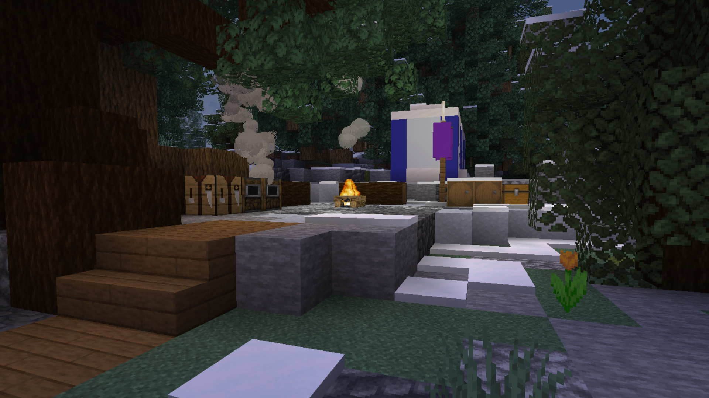

Filius Scout Camp

Nestled in a rustic, natural setting, Filius Adventure Camp, also commonly known as the Filius Scout Camp, offers a premier destination for outdoor enthusiasts of all kinds. Designed to serve both organized scout troops and casual campers seeking a relaxing hangout, the camp provides a perfect blend of structured activities and leisurely recreation. Visitors will find a dedicated tent area for resting and a central meeting point perfect for socializing, group activities, or simply chilling by the campfire. The camp boasts a wide array of exciting pursuits, inviting adventurers to go fishing in serene waters, embark on scenic boating excursions down the river, experience the thrill of the zipline course, and test their aim at the archery range. With these and many other outdoor challenges available, Filius Adventure Camp provides a comprehensive and memorable wilderness experience for all who visit.